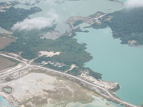
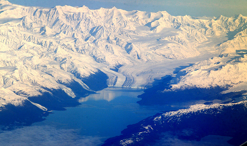

Conciencia ecológica
Sólo para ayudar a crear conciencia ecológica es por lo que transcribo un mensaje electrónico recibido con respecto al proyecto de explotación minera Pascua Lama:
“Hace poco una amiga me sorprendió con el siguiente correo electrónico, con información de la que yo no sabía nada y, francamente, me parece bastante más grave que cualquier desacuerdo menor que ocurra en el Parque Pumalín. Con el proyecto de la explotación minera de Pascua Lama Aquí se está jugando con los recursos hídricos, del agua, de nuestro país, con recursos naturales que nos llegan de la agricultura, y lo que es peor, con nuestros recursos humanos. Para variar, nos están viendo la cara, y creo que no estaría mal poner manos a la obra, ponerse en campaña o al trabajo, y poner presión para evitar situaciones como la siguiente, o al menos exponerlas a debate público para que no puedan seguir silenciándose. 
Esto es el caso del Proyecto Pascua-Lama…
Chile, es un país con grandes reservas de agua dulce entre ríos, lagos y glaciares. Como todos deben saber, el agua es un recurso muy importante y por el cual se anuncian los grandes conflictos bélicos del futuro. Existe en la tercera región de nuestro país, Chile, un lugar llamado el Valle de San Félix, comuna sin cesantía, que está formado por agricultores que aportan la segunda cantidad de dinero más grande del país (como región). Este lugar se abastece de agua por dos ríos que nacen de los “deshielos” de glaciares de las cordilleras que los rodean y que tienen el agua más pura de Chile.
El problema es que como muy poca gente sabe, bajo estos milenarios glaciares se encuentra el TESORO DE AMÉRICA que consiste en DECENAS DE BILLONES DE DÓLARES en oro, plata y otros muchos metales. Para extraer estos metales es necesario romper estos glaciares, algo que nunca se ha hecho en el mundo y hacer dos agujeros como Chuquicamata. Un agujero para la extracción de metales y otro para deshechos o para lo que no sirva porque las mineras no reciclan nada. Este proyecto ya está aprobado por nuestro gobierno y empieza a funcionar el próximo año, sólo porque los agricultores de la zona han conseguido retrasar el proyecto. El proyecto lleva el nombre de Pascua Lama y será realizado por una multinacional de la que es socio el padre de Bush …
Lo terrible de esto, es que ellos al destruir el glaciar no solo destruyen una reserva natural de agua, se apoderan o apropian de los dos ríos que abastecen la zona, y devuelven el agua a la gente convertida en agua que sólo sirve para regar, (o sea que no sirve ni para el consumo humano ni para el consumo animal) sino que aparte de todo, hasta que último gramo de oro se va directo a la reserva gringa o norteamericana, no queda ni un gramo aquí y lo único que nos va a quedar a nosotros es agua sucia, contaminación y enfermedades. 
Esta gente lleva mucho tiempo luchando por su tierra y su fuente de trabajo, no han aparecido en televisión por orden del Ministerio del Interior, su única solución es que más gente lo sepa y poder llegar a cortes o parlamentos intern